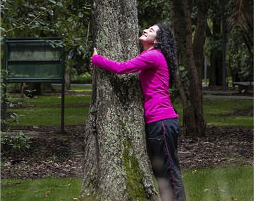

CONTRUIMOS CONEXIONES VERDES
LA CONSERVACIÓN DE LA BIODIVERSIDAD Puesto que, al albergar una amplia variedad de plantas, muchas de ellas endémicas o en peligro de extinción, contribuye a la preservación de especies valiosas para el ecosistema local.
INVESTIGACIONES CIENTIFICAS Esto para extender el conocimiento de la flora, la biología de las plantas del medio ambiente y desarrollar proyectos para entender mejor el entorno natural.
INCENTIVAMOS LA EDUCACIÓN AMBIENTAL El Jardín Botánico proporciona a la comunidad y a los visitantes información sobre la importancia de la biodiversidad, la conservación, la ecología y la sostenibilidad. Ofrece programas educativos, visitas guiadas y actividades para estudiantes y público en general.
¿QUÉ HACER EN EL JARDÍN?
AVISTAMIENTO DE AVES
PICOS Y ALAS
Colombia es considerado el país con la mayor
diversidad de aves del planeta.
Jardín Botánico es un sitio ideal para el avistamiento de aves debido a su cobertura vegetal. Acompáñanos a disfrutar del canto matutino de varias especies
TROPICARIO (CIRCUITO DE INVERNADEROS)
Tendrás la oportunidad de viajar por diferentes lugares de Colombia,
Desde la parte más alta de nuestras montañas, el superpáramo,ecosistema donde nacen los ríos que recorren el territorio, hasta las selvas húmedas tropicales uno de los lugares mas biodiversos del mundo.
Podrás recorrer los valles interandinos de los principales ríos del país, el Cauca y el Magdalena, hasta llegar a la Alta Guajira para conocer la diversidad del tan amenazado Bosque Seco Tropical.
RUTAS AGROECOLÓGICA
de huerta en huerta
“Experiencias auténticas alrededor de la agricultura urbana”
Está acompañado de actividades basadas en la educación ambiental y la agricultura como eje principal de un nuevo escenario de relación humano–naturaleza.
Cada ruta agroecológica corresponde a una temática diferente, con variedad de prácticas, estilos, historias de vida y talleres.
Sumado a esto, encontramos semillas nativas y libres, hortalizas, frutas, aromáticas disponibles y más productos que en nuestra ciudad podemos sembrar, plantar, cosechar y disfrutar.

JARDÍN VITAL
su conjunto nos cuida y brinda bienestar
Promovemos la reconexión vital del ser humano con la naturaleza de la cual hace parte, apoyando en la creación de una cultura del cuidado, el bienestar y el buen vivir, y contribuyendo a la conservación de los ecosistemas y a la salud de los ciudadanos.
Actualmente ofrecemos 4 terapias:
Terapia de naturaleza
Sano, activo y Feliz
Terapia de Bosque
Reverdece tu espíritu